- Módulo: Administración de Sistemas Operativos
- Título del trabajo Servicios de impresión
- Componentes del grupo: Iván José Hernández Regalado
- Curso Académico: 2014/2015
- Fecha de entrega: 13 de Febrero de 2015
Primero configuramos el servidor con un nombre e IP estática que no coincida con ninguna otra de la red local.
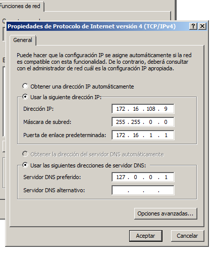
Ahora vamos a descargar e instalar el PDFCreator que es un software que hace de impresora para la realización de esta práctica.
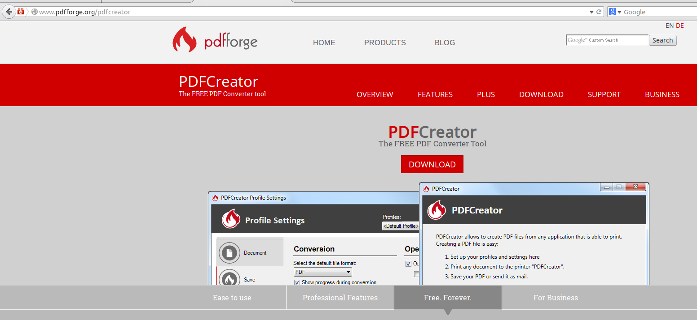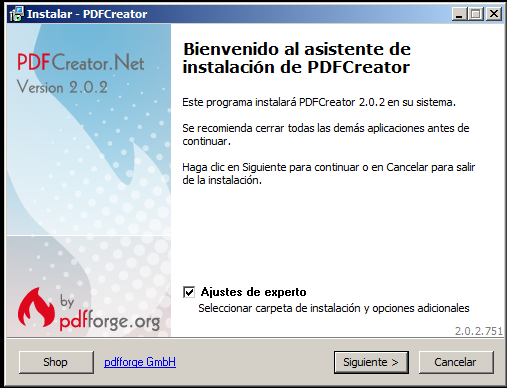
Durante la instalación elegimos solo los componentes necesarios.
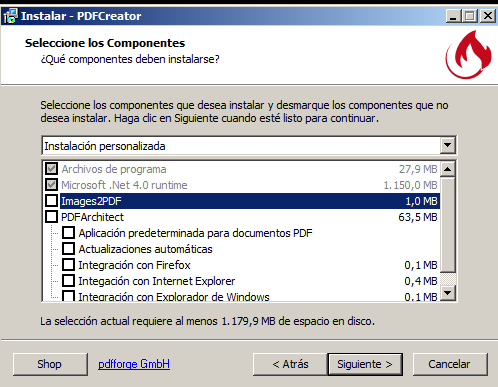
También instalar el adobe reader para ver los pdfs creados por dicho software.
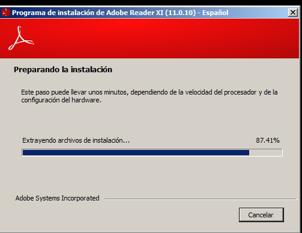
Para la comprobación solo debemos abrir un bloc de notas e imprimirlo usando la impresora de PDFCreator.
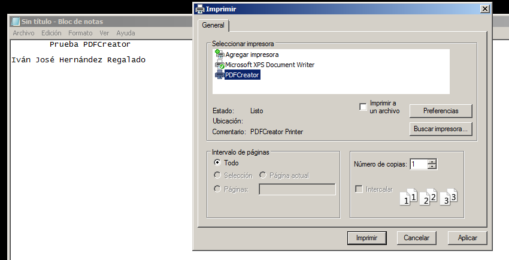
Ahora guardamos el archivo pdf especificando una ruta y dandole a guardar.
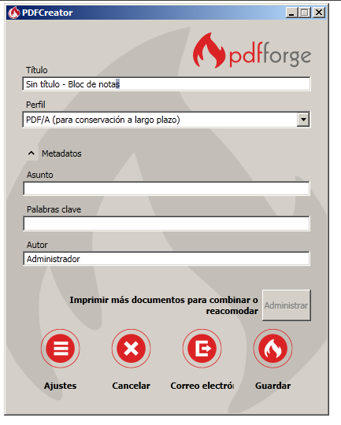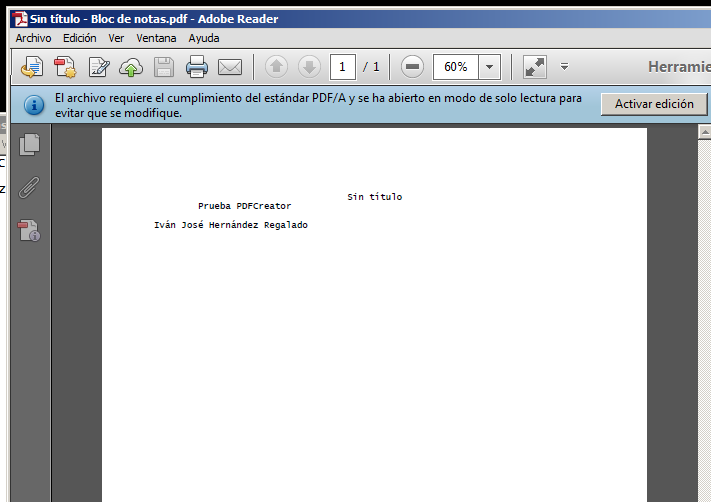
Para la parte de acceso web debemos cambiarle el nombre a la impresora para que en la red sea diferente a las demás y darle a compartir desde las propiedades de la impresora.
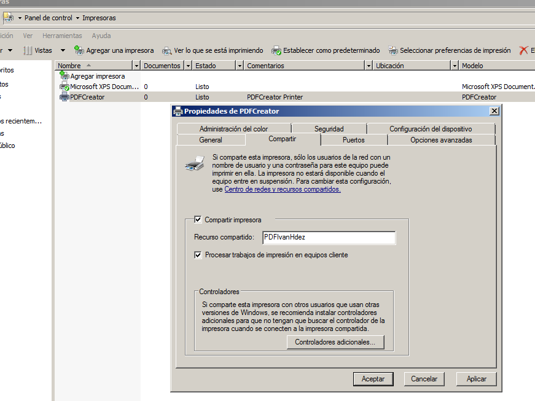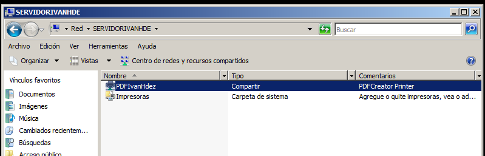
En el servidor agregar la función de servicios de impresión.
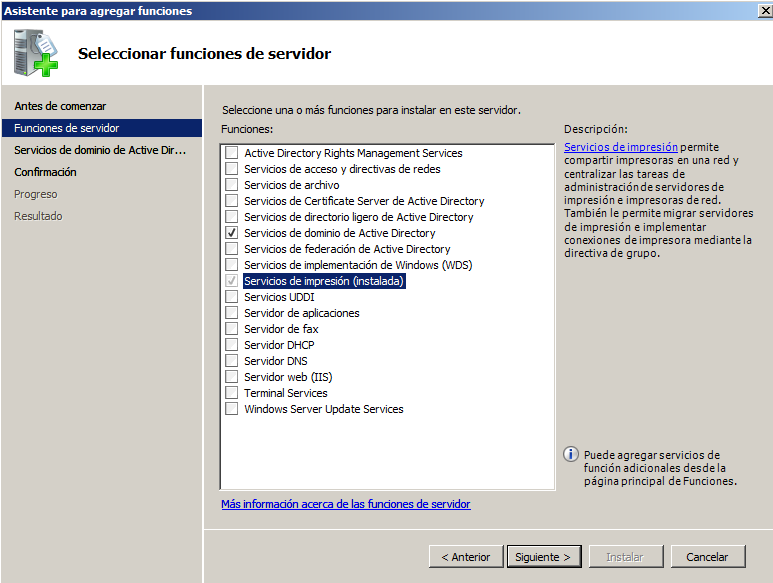
Elegir la opción de nuevo crear un dominio en un bosque nuevo.
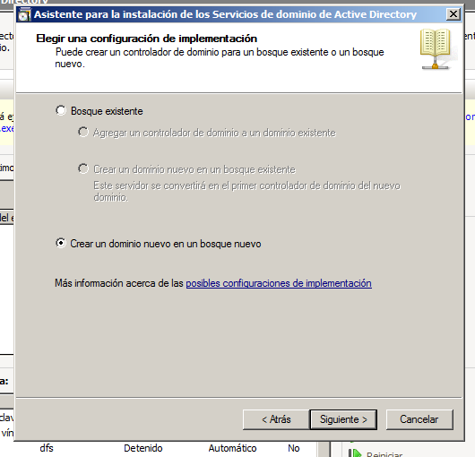
Especificamos un nombre de equipo mas dominio.
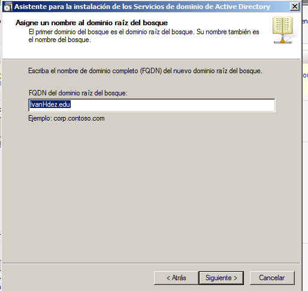
Tambień agregar la función de servicio LDP con sus características requeridas.
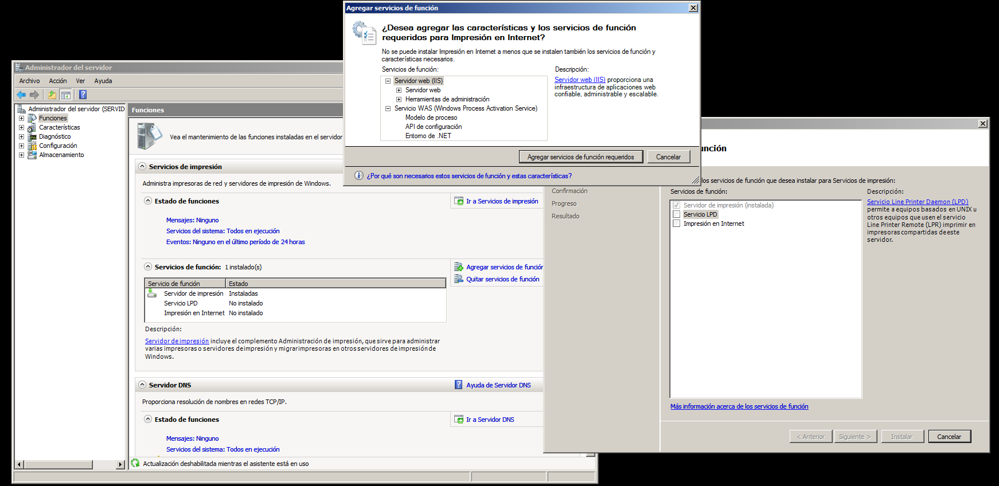
Comprobar desde un navegador que nos podemos conectar vía web con nuestra impresora usando un usuario y clave de active directory o el mismo usuario administrador.
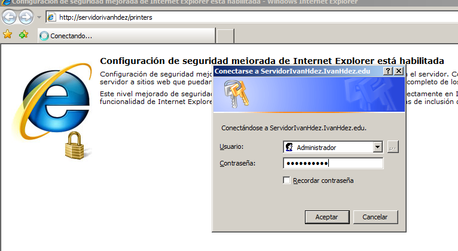
Buscamos en propiedades el nombre de la red para usarlo desde un cliente.
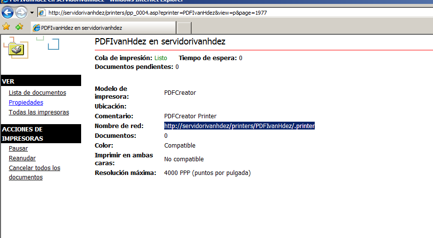
En la comprobación desde un cliente ponemos una IP estática que esté en el rango del servidor.
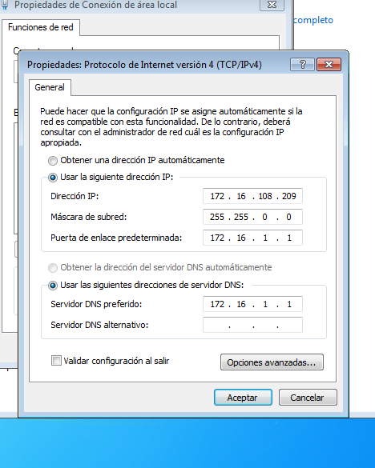
Ahora desde un navegador vamos a buscar nuestra impresora con la ruta que buscamos anteriormente.
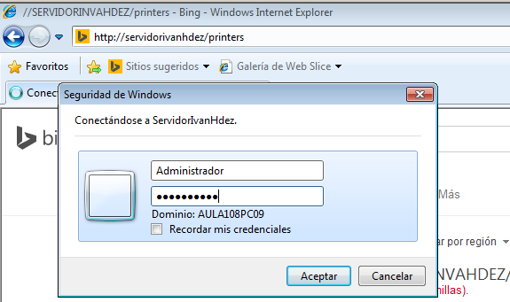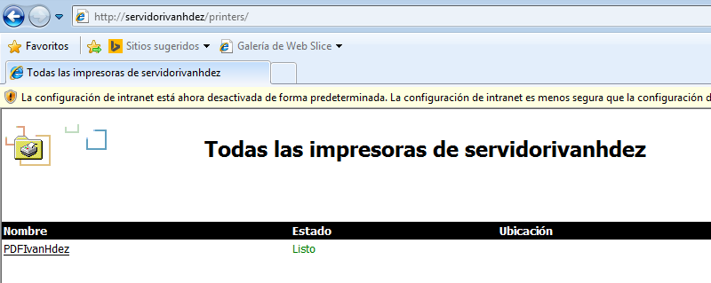
Agregamos la impresora buscando nuestro servidor y especificando la impresora.
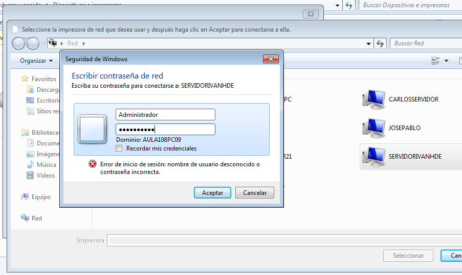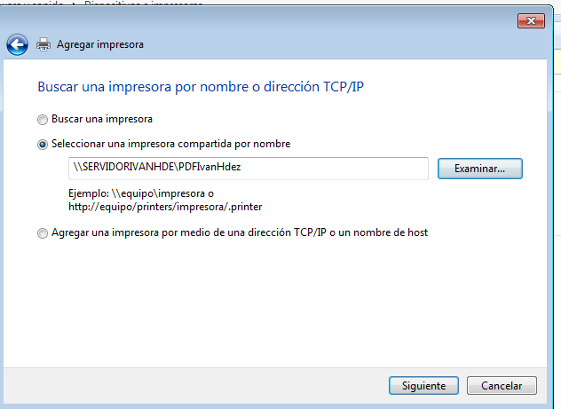
Vamos a especificar la ruta de guardado de las impresiones desde los ajustes de perfil del PDFCreator en el servidor.
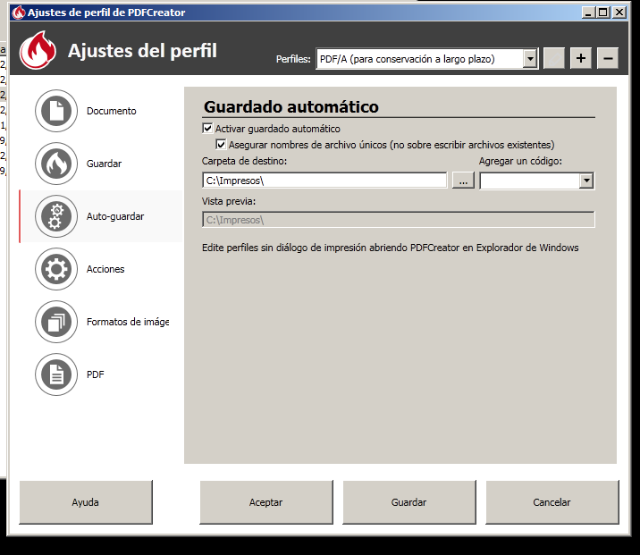
Para la comprobación vamos a imprimir un bloc de notas especificando la impresora de red.
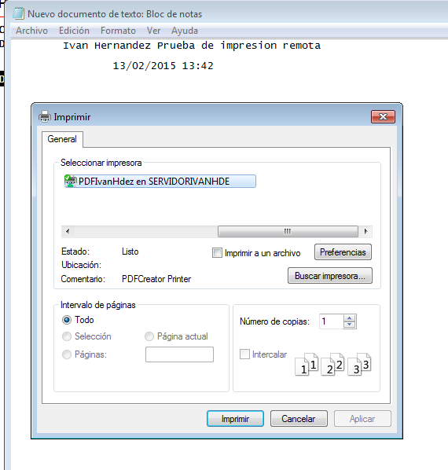
Y miramos en el servidor si se creo el pdf en la carpeta de impresos con los datos que escribimos en el cliente.
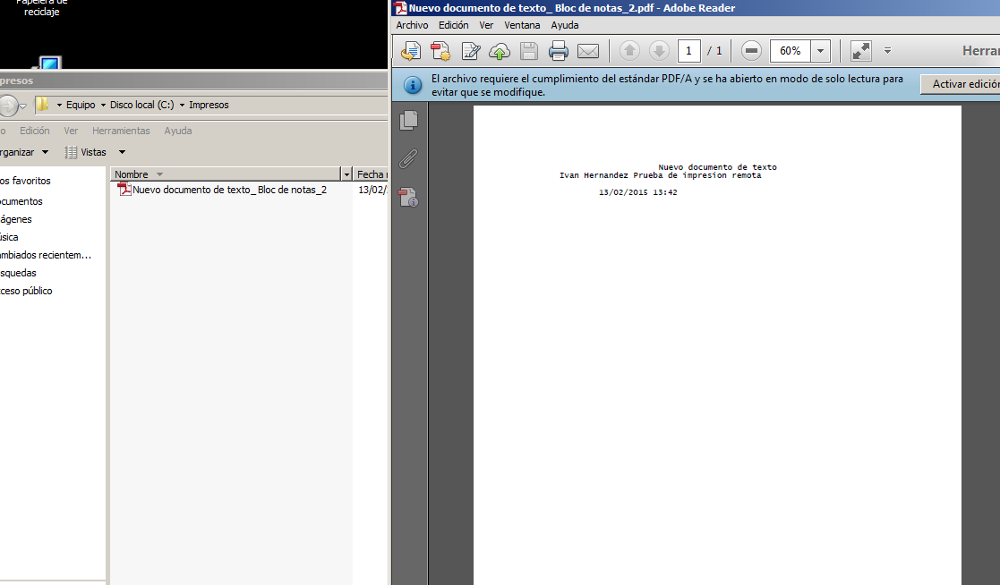